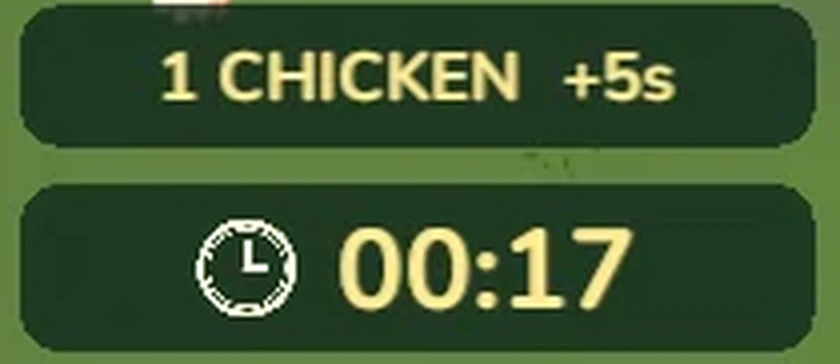

1. 게임 · 한눈에
닭을 태워 시간을 버는 타임어택
-
직접 만든 불길 이펙트
1 태우기화염방사기로 흰 닭을 지지기
-

AI와 함께 만든 3D 모델 · 돌려 보세요
2 치킨통쓰러진 닭이 치킨통으로 바뀜
-

게임 화면의 시간 표시
3 시간 벌기치킨통을 먹으면 +5초. 시간이 0이 되면 끝
1. 게임 · 플레이어가 느끼는 것
맞은 닭이 온몸으로 반응하게

지금: 평소 · 반복
버튼을 눌러 보세요 · 게임에 들어간 실제 동작
닭 모델: Chickensoft (CC BY 4.0)
- 눈이 > < 로"뜨겁고 당황한 느낌"을 표정으로
- 놀람 0.2초 → 도주 → 진정2배 속도로 도망치다 2초 뒤 진정
- 아픈 느낌 대신 우스꽝스럽게빨간 번쩍임, 꼬꼬댁 소리, 만화 같은 몸짓
1. 게임 · 플레이어가 느끼는 것
불이 번지는 아레나

- 0.4초 닿으면 불붙음6초 동안 타며 2.4 m 안으로 번짐
- 타는 것 122개, 안 타는 것 12개건물과 바위는 길잡이와 엄폐물로
- 나무는 잎부터 타고 검은 가지만 남음
2. AI와 만든 과정 AI 리더십
그림으로 먼저 확인하고, 승인한 것만 만들기
- AI 참고 그림
- 내 확인
- Blender 모델과 동작
- Unity 적용


닭 놀람 동작 — 포즈 시트 승인 뒤 제작. 검사 9개 통과
닭 모델: Chickensoft (CC BY 4.0)
2. AI와 만든 과정 구조화 능력
기능 하나를 단계와 완료 기준으로 쪼개기
예: 불에 맞은 닭의 눈 표정
 →
→
만드는 순서
- 원래 눈을 따로 떼어 낼 수 있는지 확인
- 같은 자리에 > < 눈 만들기
- 얼굴에 붙이고 깜빡임 없게 띄우기
- 평소 눈과 > < 눈을 바꾸는 장치
- 놀람·도주·회복 흐름에 연결
- 실제 쿼터뷰에서 선 두께와 크기 조정
완료 기준
- 평소 눈과 > < 눈이 겹치지 않음
- 머리가 돌아도 얼굴을 따라 움직임
- 연속으로 맞아도 깜빡이지 않음
- 회복하면 원래 눈, 다시 나올 때 표정이 남지 않음
- 여러 마리가 맞아도 각자 따로 반응
- 실제 플레이 크기에서 표정이 읽힘
검사 11개 통과. 같은 방식으로 남긴 결과 기록 12개, 통과한 검사 100개 이상
2. AI와 만든 과정 학습 실행력
카툰풍 불 효과와 셰이더를 먼저 공부하고, 게임에 적용
연습 프로젝트 2026. 10. 6 ~ 7

- 툰 셰이딩과 외곽선
- 불꽃 플립북과 일렁이는 빛
- 타들어 가며 사라지는 디졸브
- 열기 왜곡(아지랑이)

닭 모델: Chickensoft (CC BY 4.0)